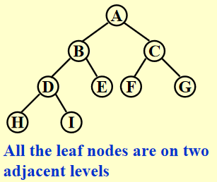

Chap 4 Trees
Preliminaries
Definitions
- 树(Trees)：它是一组节点，可以为空，如果不为空：
- 包含1个根节点(root)\(r\)
- 有0个或多个子树(subtrees)\(T_1, \dots, T_k\)，每个子树的根节点都和\(r\)通过一条边(edge) 连接
注： + 子树之间不会相互连接，因此每个节点都是某个子树的根节点 + 对于一棵有\(N\)个节点的树，它有\(N - 1\)条边
- 度(degree)：
- 一个节点的度指的是它所有子树的个数
- 一棵树的度为\(\max\limits_{\text{node } \in \text{ tree}}\{\text{degree(node)}\}\)
- 父节点(parent)：有子树的节点，孩子节点(children)：父节点子树的根节点
- 兄弟节点(siblings)：有相同父节点的孩子节点
- 叶子节点(leaf)：度为0的节点
- 从\(n_1\)到\(n_k\)路径(path)：一个包含节点\(n_1, n_2, \dots, n_k\)==唯一==的序列，使得\(n_i\)是\(n_{i+1}\)的父节点(\(1 \le i < k\))
- 路径长度(length)：路径上边的条数
- 深度(depth) of \(n_i\)：从根节点出发的唯一的路径长度，规定\(Depth(root) = 0\)
- 高度(height) of \(n_i\)：从\(n_i\)到叶子结点的最长路径长度，规定\(Height(leaf) = 0\) \(\(\therefore height(root) = depth(deepest\text{ }leaf)\)\)
- 祖先(ancestor)：从该节点到根节点的路径上所有的节点
- 后代(descendant)：该节点所有子树的节点
- 内部顶点(internal vertices)：有孩子节点的顶点
Implementation
List Representation

问题：每个节点的空间大小取决于它有多少个子树，这样实现起来就很麻烦
FirstChild-NextSibling Representation

注：对于同一棵树，这种表示并不唯一，因为树中孩子的顺序可以是任意的
Application(File System)
Directory listing in a hierarchical file system
+ Unix 系统
 + DOS 系统
+ DOS 系统
 > 注意：在UNIX系统中位于深度\(d_i\)的文件，在转化为DOS系统的表示法时需要将它们的名字缩进\(d_i\)个
> 注意：在UNIX系统中位于深度\(d_i\)的文件，在转化为DOS系统的表示法时需要将它们的名字缩进\(d_i\)个tab键
代码实现（前序遍历）：
static void ListDir(DirOfFile D, int Depth)
{
if (D is legitimate entry)
{
PrintName(D, Depth);
if (D is a directory)
for (each child C of D)
ListDir(C, Depth + 1);
}
}
注意：
Depth变量是不应该被用户看到的内部变量，需要隐藏起来。一种解决方法是像下面那样定义另外一个函数
Calculating the size of a directory
 代码实现（后序遍历，时间复杂度\(O(N)\)）
代码实现（后序遍历，时间复杂度\(O(N)\)）
static int SizeDir(DirOrFile D)
{
int TotalSize;
TotalSize = 0;
if (D is a legitimate entry)
{
TotalSize = FileSize(D);
if (D is a directory)
for (each child C of D)
TotalSize += SizeDir(C);
} // end if D is legal
return TotalSize;
}
Binary Trees
Binary Tree(二叉树)：每个节点拥有不超过两个孩子的树

Expression Trees(syntax trees)
^fc61a7 + 先将[[Chap 3 Lists, Stacks, and Queues#^01bb22|中缀->后缀]] + 然后类似[[Chap 3 Lists, Stacks, and Queues#^f00de4|后缀表达式求解]]的方法，遇到运算符时，将堆栈内的两个操作数弹出，与运算符构建一棵树，对应关系如下： + 左子树：栈顶下面的元素 + 根节点：运算符 + 右子树：栈顶元素 将这棵树压入堆栈中，重复上述步骤直到遍历完整个表达式
示意图：

代码实现：
// from my work of project 2
Tree ExpTree(Queue q)
{
Tree ans; // The final expression tree
Stack s; // The stack for tree construction, containing the nodes or the trees
PtrToNode node, op1, op2, new; // node for all element in the queue; op1 and op2 are operands;and new is a new tree
PtrToQueue cur = q->front->next; // Starting from the second element, for the queue has a dummy header
s = CreateStack(); // Initialization
while (cur != NULL) // Traversing all the element in the queue
{
node = CreateNode(cur->var); // Creating node for every element in the queue
if(isalnum(cur->var[0]) || cur->var[0] == '-' && isalnum(cur->var[1])) // If it's a operand, push it into the stack
{
Push1(node, s);
// printf("%s\n", str);
}
else // If it's a operator,
{
op2 = Top1(s); // Obtaining the top two operands from the stack
Pop(s);
op1 = Top1(s);
Pop(s);
new = CreateTree(node, op1, op2); // Creating an expression (sub)tree
Push1(new, s);
}
cur = cur->next;
}
ans = Top1(s); // The remaining tree in the stack is the answer
return ans;
}
Tree Traversals
树的遍历(tree traversals)：对树的每个节点都访问一次，时间复杂度为\(O(N)\)

前序遍历(Preorder Traversal)
后序遍历(Postorder Traversal)
void postorder(tree_ptr tree)
{
if (tree)
{
for (each child C of tree)
postorder(C);
visit(tree);
}
}
层序遍历(Levelorder Traversal) ^770ab3
void levelorder(tree_ptr tree)
{
enqueue(tree);
while (queue is not empty)
{
visit(T = dequeue());
for (each child C of T)
enqueue(C);
}
}
中序遍历(Inorder Traversal)
// Recursion
void inorder(tree_ptr tree)
{
if (tree)
{
inorder(tree->Left);
visit(tree->Element);
inorder(tree->Right);
}
}
// Iteration(using stack)
void iter_inorder(tree_ptr tree)
{
Stack S = CreateStack(MAX_SIZE);
for (;;)
{
for (; tree; tree = tree->left)
Push(tree, S);
tree = Top(S);
Pop(S);
if (!tree)
break;
visit(tree->Element);
tree = tree->Right;
}
}
注：入栈顺序貌似是前序遍历？🤔 我还没验证过……
Threaded Binary Trees
对于一般的二叉树，它的叶子节点的左右指针指向
NULL，这浪费了很多空间。而线索二叉树(Threaded Binary Trees) 很好地利用了闲置的节点，具体规则如下：
- 如果
Tree->Left为空，将它指向中序遍历中的==前一个节点== - 如果
Tree->Right为空，将它指向中序遍历中的==后一个节点== - 有一个头节点(dummy node)，使得最左边和最右边孩子分别指向这个节点的左右孩子
// 结构声明
typedef struct ThreadedTreeNode *PtrTo ThreadedNode;
typedef struct PtrToThreadedNode ThreadedTree;
struct ThreadedTreeNode
{
int LeftThread; // if it is True, then Left
TreadedTree Left; // is a thread, not a child ptr
ElementType Element;
int RightThread; // if it is True, then Right
ThreadedTree Right; // is a thread, not a child ptr
}
🌰

注：虽然这里默认使用中序遍历的定义，但我们也可以将其修改成前序或者后序遍历的版本(比如对于后序遍历版的线索二叉树，某个节点空出来的左子树指向它在后序遍历中的前一个节点，空出来的右子树指向它在后序遍历中的后一个节点)
Special Cases
- 歪斜二叉树(Skewed Binary Trees)：

- 完全二叉树(Complete Binart Trees)： 
Properties
-
第\(i\)层(\(i \ge 1\))最多拥有\(2^{i - 1}\)个节点；深度为\(k\)的二叉树最多有\(2^k - 1\)个节点(\(k \ge 1\))
-
对于非空的二叉树，\(n_0 = n_2 + 1\)，其中\(n_0\)是叶子节点个数，\(n_2\)是度为2的节点个数
🌟证明(可推广至n叉树)： + 令\(n_1\)为度为1的节点，\(n\)为节点总数，则\(n = n_0 + n_1 + n_2\) + 令\(B\)为边的条数，则\(n = B + 1\)，而且不难发现\(B = n_1 + 2n_2\) + 联立上述三个方程，可以得到\(n_0 = n_2 + 1\)(\(n_1\)被消掉了)
❗重要推论：\(n\)叉树的叶子节点个数与\(n_1\)无关：\(n_0 = \sum\limits_{i = 2}^n (i - 1)n_i + 1\)
推论：对于一棵完全二叉树，易知\(n_1 = 0\)或\(1\)。由\(n_0 = n_2 + 1\)知: + 完全二叉树有奇数个节点时，\(n_1 = 0\) + 完全二叉树有偶数个节点时，\(n_1 = 1\)
The Search Tree ADT -- Binary Search Tree
Definition
二叉搜索树(Binary Search Tree) 是一棵二叉树，它可以是空树，如果非空，则遵循以下规则： + 每个节点有一个整数的键(key)，每个键互不相同
这里这么定义是为了方便后面的操作，实际上键不必是整数，键也可以相同 + 非空左子树的键必须小于根上的键 + 非空右子树的键必须大于根上的键 + 左右子树也是二叉搜索树
注： + 对于二叉搜索树的同一层从左往右遍历，这些节点得到值一定是有序的 + 二叉搜索树的中序遍历的结果是非递减的 + 给出一棵二叉搜索树的前序或者*后序**遍历，根据二叉搜索树的定义，我们应当可以还原出这棵树 + 对于一棵完全的二叉搜索树，它最小的节点一定是叶子节点*，最大的就不一定了
ADT
对象：拥有0个或多个元素的有限有序表
运算：
+ SearchTree MakeEmpty(SearchTree T);
+ Position Find(ElementType X, SearchTree T);
+ Position FindMin(SearchTree T);
+ Position FindMax(SearchTree T);
+ SearchTree Insert(ElementType X, SearchTree T);
+ SearchTree Delete(ElementType X, SearchTree T);
+ ElementType Retrieve(Position P);
Implementations
// 声明部分
#ifndef _Tree_H
struct TreeNode;
typedef struct TreeNode *Position;
typedef struct TreeNode *SearchTree;
SearchTree MakeEmpty(SearchTree T);
Position Find(ElementType X, SearchTree T);
Position FindMin(SearchTree T);
Position FindMax(SearchTree T);
SearchTree Insert(ElementType X, SearchTree T);
SearchTree Delete(ElementType X, SearchTree T);
ElementType Retrieve(Position P);
#endif // _Tree_H
// 写在执行文件部分
struct TreeNode
{
ElementType Element;
SearchTree Left;
SearchTree Right;
}
// 初始化处理，时间复杂度O(logN)
SearchTree MakeEmpty(SearchTree T)
{
if (T != NULL)
{
MakeEmpty(T->Left);
MakeEmpty(T->Right);
free(T);
}
return NULL;
}
Find
Position Find(ElementType X, SearchTree T)
{
if (T == NULL)
return NULL; // not found in an empty tree
if (X < T->Element) // if smaller than root
return Find(X, T->Left); // search left subtree
else if (X > T->Element) // if larger than root
return Find(X, T->Right); // search right subtree
else // if X == root
return T; // found
}
注： 1. 时间复杂度\(T(N)\)和空间复杂度\(S(N)\)都等于\(O(d)\)，其中\(d\)为树\(X\)的深度 2. 函数开始应先判断树是否为空，如果少了这句，后面就会发生段错误（在不存在的树中获取元素，这是未定义的） 3. 这里的递归函数是尾递归(tail recursions)，因此系统会自动将递归优化为循环
// 迭代版Find()
Position Iter_Find(ElementType X, SearchTree T)
{
while (T)
{
if (X == T->Element)
return T; // found
if (X < T->Element)
T = T->Left; // move down along left path
else
T = T->Right; // move down along right path
} // end while-loop
return NULL; // not found
}
FindMin
Position FindMin(SearchTree T)
{
if (T == NULL)
return NULL; // not found in an empty tree
else if (T->Left == NULL) // found left most
return T;
else
return FindMin(T->Left); // keep moving to left
}
FindMax
Position FindMax(SearchTree T)
{
if (T != NULL)
while (T->Right != NULL)
T = T->Right; // keep moving to find right most
return T; // return NULL or the right most
}
这两个函数的时间复杂度均为\(O(d)\)，\(d\)为树的深度
Insert
思想：执行过程类似
Find， + 如果找到了该节点，可以不做任何处理，也可以给它的计数器+1（如果节点有计数字段的话） + 否则将最后遇到的非空节点 视为新节点的parent，然后将新节点插入NULL的位置上
SearchTree Insert(ElementType X, SearchTree T)
{
if (T == NULL) // Create and return a one-node tree
{
T = (SearchTree)malloc(sizeof(struct TreeNode));
if (T == NULL)
FatalError("Out of space!!!");
else
{
T->Element = X;
T->Left = T->Right = NULL;
}
} // End create a one-node tree
else
{
if (X < T->Element)
T->Left = Insert(X, T->Left);
else if (X > T->Element)
T->Right = Insert(X, T->Right);
// Else X is in the tree already, we'll do nothing
}
return T; // Don't forget this line!!
}
时间复杂度：\(O(d),d\)的意思同前
🤔思考：可不可以这样简化一下插入函数——将函数返回类型改为
void，然后在第一个else中不采用赋值语句，最后也不返回T答案：显然不可以。如果最后没有在树中找到要插入的节点，那么就需要新建一棵子树。如果建完这棵树后既不返回它，也没有将它赋回去，那么这棵子树的父节点无法与它建立联系，因此建了也等于白建。
🌟Delete
这是二分搜索树中最难处理的部分。我们要处理有三种情况： + 叶子结点 + 有一个孩子 + 有两个孩子
其中前两种情况的实现较为简单，最后的情况较为复杂，具体分析如下：
- 删除叶子节点：直接将它的父辈节点连接到空节点上
- 删除度为1的节点：用该节点的子节点替换它自身
-
删除度为2的节点：
-
用该节点左子树的最大节点或右子树的最小节点 （挑一种）替换它自身
解释：以右子树最小节点为例，将其作为新的父节点，因为它既满足比左子树所有节点大（右子树的节点>左子树的节点），又满足比新的右子树所有节点小（它原本就是右子树最小的节点）
-
从子树中删除用来替换的节点
注意用来替换的节点的度不超过1
-
// 这里删除度为2的节点时采用拿右子树最小节点替换的方法
SearchTree Delete(ElementType X, SearchTree T)
{
Position TmpCell;
if (T == NULL)
Error("Element not found");
else
{
if (X < T->ELement) // Go left
T->Left = Delete(X, T->Left);
else if (X > T->Element) // Go right
T->Right = Delete(X, T->Right);
else // Found element to be deleted
{
if (T->Left && T->Right) // Two children
{ // Replace with smallest in right subtree
TmpCell = FindMin(T->Right);
T->Element = TmpCell->Element;
T->Right = Delete(T->Element, T->Right);
} // End if
else // One or zero child
{
TmpCell = T;
if (T->Left == NULL) // Also handles 0 child
T = T->Right;
else if (T->Right == NULL)
T = T->Left;
free(TmpCell); // End else 1 or 0 child
}
}
}
return T;
}
时间复杂度：\(O(h), h\)是树的高度
显然，这种删除的操作效率不高
改进方法：如果删除操作用的不多，可以采用lazy deletion的方法——为每个节点添加一个
flag字段，来标记节点是否被删除。因此我们可以不必通过释放节点的空间的方式来删除节点；而且如果我们重新插入已经删除的节点，则不必使用malloc()分配内存,因而能够提高程序的效率。很多数据库都是这么做的。
Average-Case Analysis
通过计算发现，树的所有节点的平均深度为\(O(logN)\)，证明过程见教材\(P_{108}\)
二分搜索树的大小取决于==插入的顺序==和==删除==操作 + 插入：如果顺序不够随机（最坏的情况：升序），则树会退化成一个链表 + 删除：以替换为右子树最小节点为例，过多的删除操作会导致右子树不断缩小，左子树的规模会大于右子树，破坏了树的平衡
解决方案（下学期ADS会讲）： + AVL树 + splay树
Problems
1-2. In a binary search tree which contains several integer keys including 4, 5, and 6, if 4 and 6 are on the same level, then 5 must be their parent.
F 5不一定是4, 6的直接父节点，它可能是4, 6的祖先，比如5和4中间放个3，5和6中间放个7，此时4, 6还是处在同一层，但它们的父节点不是5
2-2. If a general tree T is converted into a binary tree BT, then which of the following BT traversals gives the same sequence as that of the post-order traversal of T? A. Pre-order traversal B. In-order traversal C. Post-order traversal D. Level-order traversal
B 这个光想我也想不好，要画一下图才知道。但为了解题速度，这个可以先死记。
补充：普通树的前序 = 转化成二叉树的前序 普通树没有中序……
quiz3-R1-1. The worst cast time complexity of Binary Search is always O(logn) where n is the number of sorted integers.
F 要考虑存储方式：假设我用链表存储二分查找树，那么查找的时间复杂度就不可能是\(O(\log n)\)了
6-1 Isomorphic
Two trees, T1 and T2, are isomorphic if T1 can be transformed into T2 by swapping left and right children of (some of the) nodes in T1. For instance, the two trees in Figure 1 are isomorphic because they are the same if the children of A, B, and G, but not the other nodes, are swapped. Give a polynomial time algorithm to decide if two trees are isomorphic.
Figure 1

Format of functions:
where Tree is defined as the following:
The function is supposed to return 1 if T1 and T2 are indeed isomorphic, or 0 if not.
Sample program of judge:
#include <stdio.h>
#include <stdlib.h>
typedef char ElementType;
typedef struct TreeNode *Tree;
struct TreeNode {
ElementType Element;
Tree Left;
Tree Right;
};
Tree BuildTree(); /* details omitted */
int Isomorphic( Tree T1, Tree T2 );
int main()
{
Tree T1, T2;
T1 = BuildTree();
T2 = BuildTree();
printf(“%d\n”, Isomorphic(T1, T2));
return 0;
}
/* Your function will be put here */
Sample Output 1 (for the trees shown in Figure 1):
Sample Output 2 (for the trees shown in Figure 2):
Figure2

my code
int Isomorphic( Tree T1, Tree T2 )
{
int cnt[4];
if (T1 == NULL && T2 == NULL)
return 1;
else if (T1 == NULL || T2 == NULL)
return 0;
else if (T1->Element == T2->Element)
{
cnt[0] = Isomorphic(T1->Left, T2->Left);
cnt[1] = Isomorphic(T1->Right, T2->Right);
cnt[2] = Isomorphic(T1->Left, T2->Right);
cnt[3] = Isomorphic(T1->Right, T2->Left);
if (cnt[0] && cnt[1] || cnt[2] && cnt[3])
return 1;
}
return 0;
}
7-1 ZigZagging on a Tree
Suppose that all the keys in a binary tree are distinct positive integers. A unique binary tree can be determined by a given pair of postorder and inorder traversal sequences. And it is a simple standard routine to print the numbers in level-order. However, if you think the problem is too simple, then you are too naive. This time you are supposed to print the numbers in "zigzagging order" -- that is, starting from the root, print the numbers level-by-level, alternating between left to right and right to left. For example, for the following tree you must output: 1 11 5 8 17 12 20 15.

Input Specification:
Each input file contains one test case. For each case, the first line gives a positive integer N (≤30), the total number of nodes in the binary tree. The second line gives the inorder sequence and the third line gives the postorder sequence. All the numbers in a line are separated by a space.
Output Specification:
For each test case, print the zigzagging sequence of the tree in a line. All the numbers in a line must be separated by exactly one space, and there must be no extra space at the end of the line.
Sample Input:
Sample Output:
my code(revised)
#include <stdio.h>
#include <stdlib.h>
#define SIZE 31
typedef struct node * PtrToNode;
typedef PtrToNode tree;
struct node
{
int data;
PtrToNode left;
PtrToNode right;
};
int inorder[SIZE], postorder[SIZE];
tree CreateTree(int in[], int post[], int n);
void Traversal(tree t);
int main()
{
int n;
int i, j;
tree tree;
scanf("%d", &n);
for (i = 0; i < n; i++)
scanf("%d", &inorder[i]);
for (i = 0; i < n; i++)
scanf("%d", &postorder[i]);
tree = CreateTree(0, n - 1, n - 1);
Traversal(tree);
return 0;
}
// 知道中序和后序遍历构造一棵树
tree CreateTree(int in[], int post[], int n)
{
PtrToNode node;
int root;
int i;
if (!n)
return NULL;
root = post[n - 1];
for (i = 0; i < n && in[i] != root; i++);
node = (PtrToNode)malloc(sizeof(struct node));
node->data = root;
node->left = CreateTree(in, post, i);
node->right = CreateTree(in + i + 1, post + i, n - i - 1);
return node;
}
// 思路：使用两个堆栈(堆栈可以改变顺序)，一个存从右往左遍历的那层节点(stack1)，另一个存从左往右遍历的那层节点(stack2)，交替进行，直到两个堆栈均为空结束
void Traversal(tree t)
{
PtrToNode stack1[SIZE], stack2[SIZE];
int cnt = 0, flag = 1;
int top1, top2;
top1 = top2 = -1;
stack1[++top1] = (PtrToNode)malloc(sizeof(struct node));
stack1[top1] = t;
while (top1 != -1 || top2 != -1)
{
if (cnt % 2 == 0)
{
while (top1 != -1)
{
if (flag)
{
printf("%d", stack1[top1]->data);
flag = 0;
}
else
printf(" %d", stack1[top1]->data);
if (stack1[top1]->right != NULL)
{
stack2[++top2] = (PtrToNode)malloc(sizeof(struct node));
stack2[top2] = stack1[top1]->right;
}
if (stack1[top1]->left != NULL)
{
stack2[++top2] = (PtrToNode)malloc(sizeof(struct node));
stack2[top2] = stack1[top1]->left;
}
free(stack1[top1--]);
}
}
else
{
while (top2 != -1)
{
printf(" %d", stack2[top2]->data);
if (stack2[top2]->left != NULL)
{
stack1[++top1] = (PtrToNode)malloc(sizeof(struct node));
stack1[top1] = stack2[top2]->left;
}
if (stack2[top2]->right != NULL)
{
stack1[++top1] = (PtrToNode)malloc(sizeof(struct node));
stack1[top1] = stack2[top2]->right;
}
free(stack2[top2--]);
}
}
cnt++;
}
printf("\n");
}
我感觉好像没有必要在
Traversal()函数里使用malloc()，因为我已经开了大小确定的数组了🤔
评论区